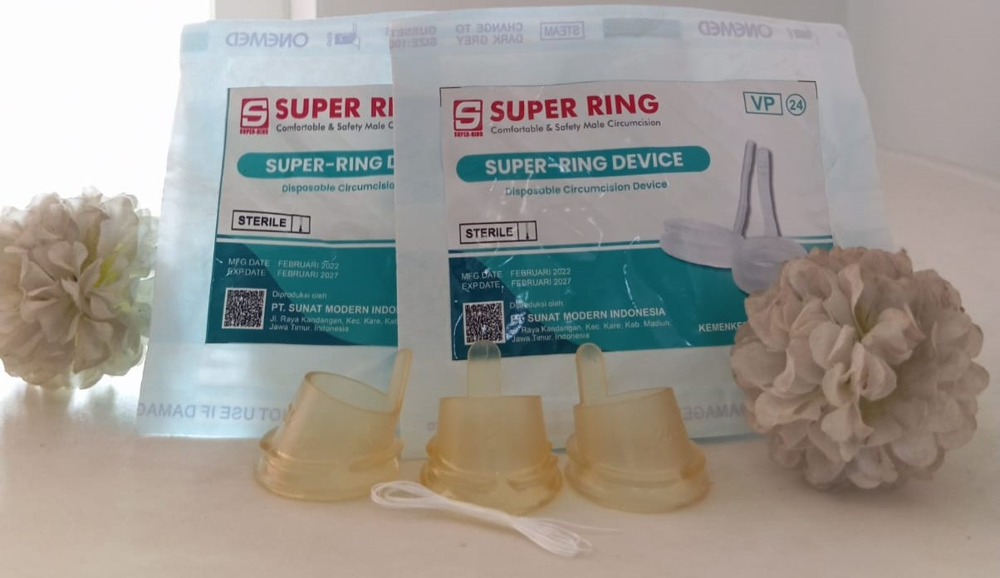

Metode Sunat Super Ring Reborn V [Aman untuk Bayi dan Anak]
Sebagai orang tua yang memiliki bayi laki - laki atau balita dan anak yang sudah waktunya sunat tentu kita menginginkan yang terbaik untuk anak kita yaitu sunat tanpa rasa sakit, aman, dan cepat prosesnya. Salah satu metode sunat terbaru yang cocok untuk bayi baru lahir atau new born baby hingga anak pra sekolah adalah metode Super Ring Reborn V yang merupakan penyempurnaan dari metode Super Ring biasa. Perbedaannya, Super Ring Reborn V lebih anatomis dan lebih nyaman untuk bayi dan anak. Sumber
Cara kerja metode sunat Super Ring adalah dengan mengikat kulit atau kulup di ujung penis dengan menggunakan alat sekali pakai yang dapat menghambat aliran darah ke bagian kalup agar tidak terjadi pendarahan. Pengerjaan sunat super ring relatif cepat yaitu sekitar 8 - 10 menit saja. Nantinya alat yang berupa ring sekali pakai akan lepas dengan sendirinya sehingga tidak merepotkan pasien dan dijamin lebih higenis.
Selain itu, metode sunat Super Ring Reborn V juga memiliki keunggulan dan kelebihan lainnya seperti:
Rekomendasi sunat untuk bayi banyak menceritakan pengalaman sunat dengan metode Super Ring, bisa dilihatcerita bunda yang satu ini. Pada intinya, sunat sejak dini memang direkomendasikan karena mengandung banyak manfaat bagi kesehatan. Secara medis, manfaat sunat adalah menjaga kebersihan organ intim pria, mencegah terjadinya infeksi, mengurangi risiko kanker penis dan kanker prostat.Sumber Untuk itu jangan ragu lagi untuk membawa bayi dan anak bunda ke klinik terbaik yang ada di daerah bunda. Untuk daerah Jember dan sekitarnya, Klinik Sunat Panda dengan pengalaman lebih dari 10 tahun siap menyediakan metode sunat Super Ring Reborn V dengan kualitas alat terbaik dan tenaga medis yang berpengalaman. Klik untuk reservasi